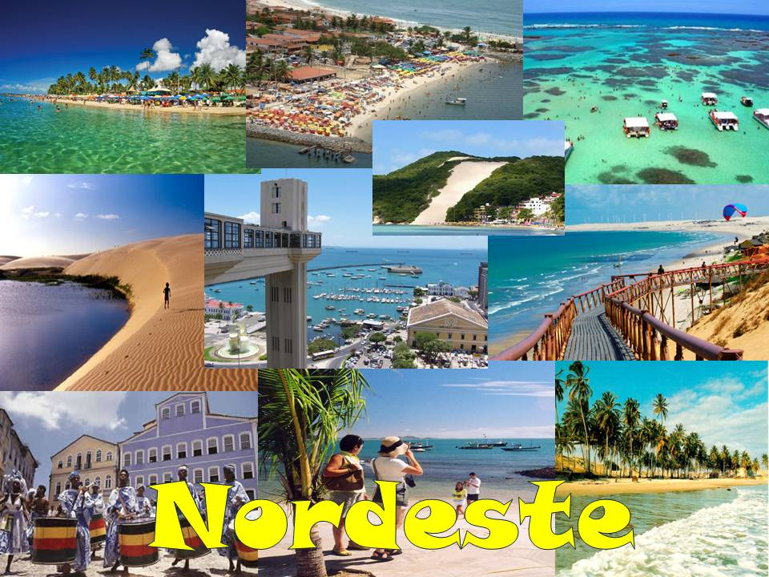

Os melhores destinos do Nordeste têm praias de mar quente, azul, esverdeado, dunas, falésias, rios, manguezais, ilhas, chapadas, cidades históricas e gastronomia arretada. São inúmeros argumentos que reforçam a mesma certeza: o Nordeste é uma imperdível região de férias para quem busca dias de descanso em alguns dos melhores destinos de viagem do Brasil.
